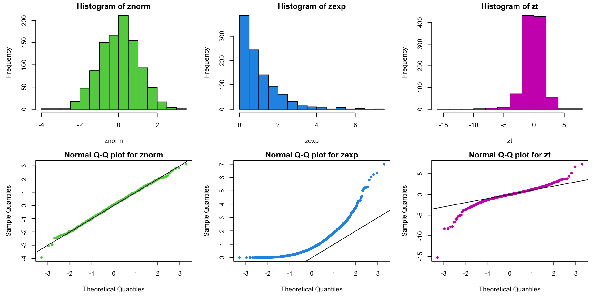
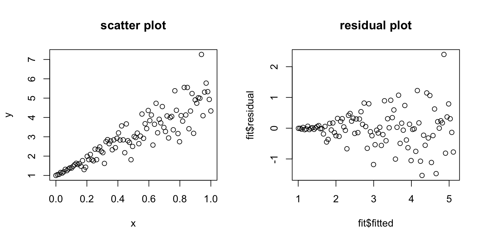

Review of Diagnostics and Transformations for Regression Models
VectorByte Methods Training
Learning Objectives
- Review assumptions of SLR/MLR models
- Review using diagnostic plots to assess whether assumptions are met
- Review the idea of basic transformations to use when assumptions aren’t met
SLR model assumptions
\[ Y_i |X_i \stackrel{ind}{\sim} \mathcal{N}(\beta_0 + \beta_1 X_i, \sigma^2) \]
Recall the key assumptions of the Simple Linear Regression model:
The conditional mean of \(Y\) is linear in \(X\).
The additive errors (deviations from line)
are normally distributed
independent from each other
identically distributed (i.e., they have constant variance)
Inference and prediction relies on this model being true!
If the model assumptions do not hold, then all bets are off:
prediction can be systematically biased
standard errors, intervals, and \(t\)-tests are wrong
We will focus on using graphical methods (plots!) to detect violations of the model assumptions.
You’ll see that
It is more of an art than a science,
but it is grounded in mathematics.

xkcd.com/1725/Example model violations
Anscombe’s quartet comprises four datasets that have similar statistical properties …
| Xmean | Ymean | Xsd | Ysd | XYcor | |
|---|---|---|---|---|---|
| 1 | 9.000 | 7.501 | 3.317 | 2.032 | 0.816 |
| 2 | 9.000 | 7.501 | 3.317 | 2.032 | 0.816 |
| 3 | 9.000 | 7.500 | 3.317 | 2.030 | 0.816 |
| 4 | 9.000 | 7.501 | 3.317 | 2.031 | 0.817 |
…but vary considerably when graphed:
Similarly, let’s consider linear regression for each dataset.
The regression lines and \(R^2\) values are the same…
| b0 | b1 | R2 | |
|---|---|---|---|
| 1 | 3.000 | 0.500 | 0.667 |
| 2 | 3.001 | 0.500 | 0.666 |
| 3 | 3.002 | 0.500 | 0.666 |
| 4 | 3.002 | 0.500 | 0.667 |
…but the residuals, \(e\), (plotted vs. \(\hat{Y~}\)) look totally different.
Plotting residuals vs fitted values (\(e\) vs \(\hat{Y~}\)) is your #1 tool for finding fit problems.
Why?
- Because it gives a quick visual indicator of whether or not the SLR assumptions are true.
What should we expect to see if they are true?
Residuals and the model assumptions
Recall that the linear regression model assumes \[ Y_i =\beta_0 + \beta_1 X_i + \varepsilon_i,~~\mbox{where}~~ \varepsilon_i \stackrel{iid}{\sim} \mathcal{N}(0,\sigma^2). \]
Our goal is to determine if the “true” residuals are iid normal and unrelated to \(X\). If the SLR model assumptions are true, then the residuals must be just “white noise”:
Each \(\varepsilon_i\) has the same variance (\(\sigma^2\)).
Each \(\varepsilon_i\) has the same mean (0).
All of the \(\varepsilon_i\) have the same normal distribution.
How do we check these?
Well, the true \(\varepsilon_i\) residuals are unknown, so must look instead at the least squares estimated residuals.
- We estimate \(Y_i = b_0 + b_1 X_i + e_i\), such that the sample least squares regression residuals are \(e_i = Y_i -\hat{Y~}_i\)
What should the \(e_i\) residuals look like if the SLR model is true?
Visually – first we check the residuals vs the predictor/fitted:
\(\rightarrow\) homoskedastic
Mathematically – If the SLR model is true, it turns out that: \[ \color{red}{e_i \sim \mathcal{N}(0, \sigma^2 [1-h_i])},~~\color{red}{h_i = \frac{1}{n} + \frac{(X_i - \bar{X})^2} {\sum_{j=1}^n (X_j - \bar{X})^2}}. \]
The \(h_i\) term is referred to as the \(i^{th}\) observation’s leverage:
- It is that point’s share of the data (\(1/n\)) plus its proportional contribution to variability in \(X\).
Notice that as \(n \rightarrow \infty\), \(h_i \rightarrow 0\) and residuals \(e_i\) “obtain” the same distribution as the unknown errors \(\varepsilon_i\), i.e., \(e_i \sim N(0, \sigma^2)\).
Understanding Leverage
The \(h_i\) leverage term measures sensitivity of the estimated least squares regression line to changes in \(Y_i\).
The term “leverage” provides a mechanical intuition:
- The farther you are from a pivot joint, the more torque you have pulling on a lever.
Here is a nice online (interactive) illustration of leverage:
Outliers do more damage if they have high leverage!
Standardized residuals
Since \(e_i \sim N(0, \sigma^2 [1-h_i])\), we know that \[ \color{red}{\frac{e_i}{\sigma \sqrt{1-h_i} }\sim N(0, 1)}. \]
These transformed \(e_i\)’s are called the standardized residuals.
They all have the same distribution if the SLR model assumptions are true.
They are almost (close enough) independent (\(\stackrel{iid}{\sim}N(0,1)\)).
Estimate \(\sigma^2 \approx s^2 = \frac{1}{n-p}\sum_{j=1}^n e_j^2\). (\(p=2\) for SLR)
About estimating \(s\) under sketchy SLR assumptions …
We want to see whether any particular \(e_i\) is “too big”, but we don’t want a single outlier to make \(s\) artificially large.
Studentized residuals
We thus define a standard Studentized residual as \[ r_i = \frac{e_i}{s_{-i} \sqrt{1-h_i} }\sim t_{n-p-1}(0, 1) \] where \(s_{-i}^2 = \frac{1}{n-p-1}\sum_{j \neq i} e_j^2\) is \(\hat{\sigma~}^2\) calculated without \(e_i\).
These are easy to get in R with the rstudent() function:
Outliers and Studentized residuals
Since the studentized residuals are distributed \(t_{n-p-1}(0,1)\), we should be concerned about any \(r_i\) outside of about \([-2.5, 2.5]\).
(Note: As \(n\) gets much bigger, we will expect to see some very rare events (big $ arepsilon_i$) and not get worried unless \(|r_i| > 3\) or \(4\).)
How to deal with outliers
How to deal with outliers
When should you delete outliers?
- Only when you have a really good reason!
There is nothing wrong with running a regression with and without potential outliers to see whether results are significantly impacted.
Any time outliers are dropped, the reasons for doing so should be clearly noted.
- I maintain that both a statistical and a non-statistical reason are required.
Outliers, leverage, and residuals
Warning: Unfortunately, outliers with high leverage are hard to catch through \(\color{dodgerblue}{r_i}\) (since the line is pulled towards them).
Means get distracted by outliers…

Outliers, leverage, and residuals
Warning: Unfortunately, outliers with high leverage are hard to catch through \(\color{dodgerblue}{r_i}\) (since the line is pulled towards them).
Consider data on house Rents vs SqFt:
Plots of \(r_i\) or \(e_i\) against \(\hat{Y~}_i\) or \(X_i\) are still your best diagnostic!
Normality and studentized residuals
A more subtle issue is the normality of the distribution on \(\varepsilon\).
We can look at the residuals to judge normality if \(n\) is big enough (say \(>20~~ \rightarrow\) less than that makes it too hard to call).
In particular, if we have decent size \(\color{red}{n}\), we want the shape of the studentized residual distribution to “look” like \(\color{red}{N(0,1)}\).
The most obvious tactic is to look at a histogram of \(r_i\).
For example, consider the residuals from a regression of Rent on SqFt which ignores houses with \(\geq 2000\) sqft.
Assessing normality via Q-Q plots
Higher fidelity diagnostics are provided by normal quantile-quantile (Q-Q) plots that:
plot the sample quantiles (e.g. \(10^{th}\) percentile, etc.)
against true percentiles from a \(N(0,1)\) distribution (e.g. \(-1.96\) is the true 2.5% quantile).
If \(r_i \sim N(0,1)\) these quantiles should be equal
- lie on a line through 0 with slope 1
R has a function for normal Q-Q plots:
It’s good to add the line \(Y = X\) to see where points should be.
Example Q-Q plots: normal, exponential, and \(t_3\) data
Example: data on price of used pickup trucks vs age in years:
Code to produce our go-to suite of three diagnostic plots:
The plots tell us that:
Data are more curved than straight (i.e. line doesn’t fit).
Residuals are skewed to the right.
There is a huge positive \(e_i\) for an old “classic” truck.
3 Go-To Diagnostic Plots
I suggest you make these diagnostic plots instead of relying on the “default” plots in R.
Why?
The default plots in R use the standardized instead of studentized residuals – I think the latter are much more useful for diagnosing problems.
Looking at the marginal distribution of the residuals as a histogram can help you see outliers.
The default plots have a bunch of extra stuff in them that I think is not particularly useful.
Violations of SLR Model Assumptions
\[\color{dodgerblue}{Y_i |X_i \stackrel{ind}{\sim} \mathcal{N}(\beta_0 + \beta_1 X_i, \sigma^2)}\]
The conditional mean of \(Y\) is linear in \(X\).
The additive errors (deviations from line)
are normally distributed
independent from each other
identically distributed (i.e., they have constant variance)
All of these can be violated! Let’s see what violations look like and how we can deal with them within the SLR framework.
Violation 1: Non-constant variance
If you get a trumpet shape (bunching of the \(Y\)s), you have nonconstant variance.
This violates our assumption that all \(\varepsilon_i\) have the same \(\sigma^2\).
Solution 1: Variance stabilizing transformations
This is one of the most common model violations; luckily, it is usually fixable by transforming the response (\(Y\)) variable.
\(\color{dodgerblue}{\log(Y)}\) is the most common variance stabilizing transform.
- If \(Y\) has only positive values (e.g. sales) or is a count (e.g. # of customers), take \(\log(Y)\) (always natural log).
\(\color{dodgerblue}{\sqrt{Y}}\) is sometimes used, especially if the data have zeros.
In general, think what you expect to be linear for your data.
Reconsider the regression of truck price onto year, after removing trucks older than 15 years (truck[year>1992,]).
Warning: be careful when interpreting transformed models.
If \(\mathbb{E}[\log(Y)] = b_0 + b_1 X\), then \(\mathbb{E}[Y] \approx e^{b_0} e^{b_1 X}\).
We have a multiplicative model now!
Note: you CANNOT compare \(R^2\) values for regressions corresponding to different transformations of the response.
\(Y\) and \(f(Y)\) may not be on the same scale,
therefore \(\text{var}(Y)\) and \(\text{var}(f(Y))\) may not be either.
Instead, look at residuals to see which model is better.
Violation 2: Nonlinear residual patterns
Consider regression residuals for the 2nd Anscombe dataset:
Things are not good! It appears that we do not have a linear mean function; that is \(\color{dodgerblue}{\mathbb{E}[Y] \neq \beta_0 + \beta_1 X}\).
Solution 2: Polynomial regression
Even though we are limited to a linear mean, it is possible to get nonlinear regression by transforming the \(X\) variable.
In general, we can add powers of \(\color{dodgerblue}X\) to get polynomial regression: \(\color{red}{\mathbb{E}[Y] = \beta_0 + \beta_1X + \beta_2 X^2 + \cdots + \beta_m X^m}\)
You can fit any mean function if \(m\) is big enough.
- Usually stick to m=2 unless you have a good reason.
Try \(\mathbb{E}[Y] = \beta_0 + \beta_1 X + \beta_2 X^2\) for Anscombe’s 2nd dataset:
Testing for nonlinearity
To see if you need more nonlinearity, try the regression which includes the next polynomial term, and see if it is significant.
For example, to see if you need a quadratic term,
fit the model then run the regression \(\mathbb{E}[Y] = \beta_0 + \beta_1 X + \beta_2 X^2\).
If your test implies \(\color{dodgerblue}{\beta_2 \neq 0}\), you need \(\color{dodgerblue}{X^2}\) in your model.
Note: \(p\)-values are calculated “given the other \(\beta\)’s are nonzero”; i.e., conditional on \(X\) being in the model.
Closing comments on polynomials
We can always add higher powers (cubic, etc.) if necessary.
- If you add a higher order term, the lower order term is kept in the model regardless of its individual \(t\)-stat.
Be very careful about predicting outside the data range as the curve may do unintended things beyond the data.
Watch out for over-fitting.
You can get a “perfect” fit with enough polynomial terms,
but that doesn’t mean it will be any good for prediction or understanding.
Other problems
Sometimes we have other strange things going on in our data sets
data are “clumped” up in \(X\) – high leverage points
residuals still aren’t normally distributed after taking transforms from earlier
responses take discrete values instead of continuous
The latter 2 we can deal with using MLR and GLMs. What about the first?
The log-log model
The other common covariate transform is \(\log(X)\).
When \(X\)-values are bunched up, \(\log(X)\) helps spread them out and reduces the leverage of extreme values.
Recall that both reduce \(s_{b_1}\).
In practice, this is often used in conjunction with a \(\log(Y)\) response transformation. The log-log model is \[ \color{red}{\log(Y) = \beta_0 + \beta_1 \log(X) + \varepsilon}. \]
It is super useful, and has some special properties …
Consider the multiplicative model \(\color{red}{\mathbb{E}[Y|X] = AX^B}\).
Take logs of both sides to get \[
\color{red}{
\begin{aligned}
\log(\mathbb{E}[Y|X]) = \log(A) + \log(X^B) &= \log(A) + B\log(X) \\
&\equiv \beta_0 + \beta_1 \log(X).
\end{aligned}
}
\]
The log-log model is appropriate whenever things are linearly related on a multiplicative, or percentage, scale.
Consider a country’s GDP as a function of IMPORTS:
- Since trade multiplies, we might expect to see %
GDPincrease with %IMPORTS.
Elasticity and the log-log model
In a log-log model, the slope \(\beta_1\) is sometimes called elasticity.
The elasticity is (roughly) % change in \(Y\) per 1% change in \(X\). \[\color{dodgerblue}{ \beta_1 \approx \frac{d\%Y}{d\%X}}\] For example, economists often assume that GDP has import elasticity of 1. Indeed:
(Can we test for 1%?)
YES! However, this time, R’s output \(t\)/\(p\) values are not what we want (why?).
> summary(GDPlm) ## output abbreviated
Estimate Std. Error t value Pr(>|t|)
(Intercept) 1.89152 0.34265 5.52 1.30e-05 ***
log(IMPORTS) 0.96934 0.08807 11.01 1.21e-10 ***But we can get the appropriate values easily:
- We do not reject the null at \(\alpha = .05\), concluding that there is not evidence that \(\beta_1\) is different from 1.
Summary: Plots of residuals v.s. \(\color{red}X\) or \(\color{red}{\hat{Y~}}\) are most important for diagnosing problems.
Log transform is your top tool (log(\(X\)), log(\(Y\)), or both).
Add polynomial terms (e.g. \(X^2\)) to get nonlinear mean patterns.
Use statistical tests to back up your choices.
Be careful with extrapolation.
Be careful about interpretation after transforming.
- You can’t use \(R^2\) to compare models under different transformations of \(Y\).
Practical
Next we’ll do a short practical to practice:
- Fitting linear models in R
- Checking diagnostics
- Choosing transformations
- Plotting predictions